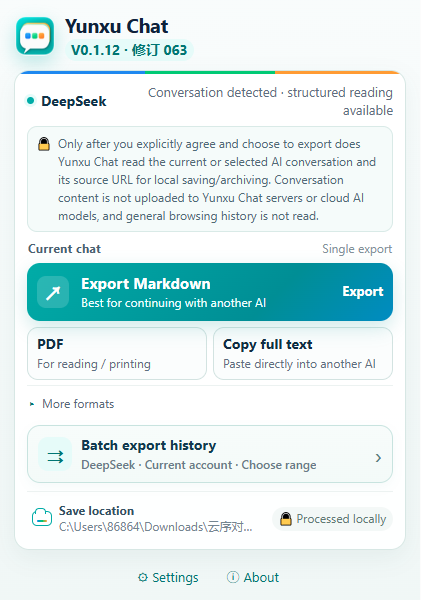
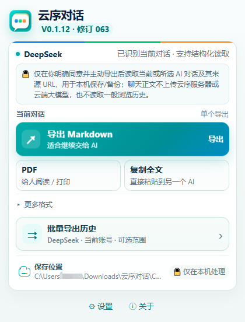

Batch export, download, and organize your AI chat history
Yunxu Chat is a local-first browser extension. On supported AI platforms with reliable batch capability, it can process multiple historical conversations selected by you and save them locally. The current conversation can also be exported as Markdown or JSON, prepared for PDF printing, or copied as organized text.
Recommended: Edge users should install the official Microsoft Edge Add-ons build for the simplest installation and future store updates.
Product screenshot

The main actions are visible as soon as you open the extension
Export the current conversation to Markdown, prepare a PDF/print view, copy the full conversation, or open Batch Export History when you need to back up many chats.
- Current chat: Markdown, PDF/print, copy full text
- Batch history: select a range on platforms with reliable Batch support
- Local saving: exported files stay on your computer
- Clear status: the UI reports platform recognition and batch capability
Core features
Batch export chat history
On platforms with reliable Batch support, explicitly choose a range and authorize the current AI site to process selected historical conversations.
Package and download
Organize multiple conversations into a ZIP download, or keep one local file per conversation for long-term archiving.
Useful local formats
Export the current conversation as Markdown or JSON, prepare a browser-native PDF/print view, or copy organized Markdown.
Long-term local archive
Maintain a local archive relationship for a conversation and update the corresponding Markdown / JSON file when the chat grows.
How it works
Open an AI conversation
Open a supported AI chat site. For batch mode, first choose the history range you want to process.
Start the action yourself
You click export, copy, PDF, or batch. Yunxu Chat does not scan AI sites in the background when no task has been started.
Save on your computer
Use Markdown, JSON, ZIP, copy, or print/PDF to keep the result locally under your control.
English + Simplified Chinese UI
English is built in. Yunxu Chat includes English and Simplified Chinese interface resources. When the extension follows the browser language, Chinese browser languages use Simplified Chinese and other browser languages use English.
Local-first privacy
Conversation content is processed locally. Yunxu Chat does not upload conversation content to Yunxu servers, does not send it to cloud LLMs, and does not use it for advertising profiling or sale. For supported structured batch reads, same-origin read-only requests are used only after you explicitly start the task and grant access to the current site.
Batch capability differs by AI platform and is offered only where Yunxu Chat has a reliable Batch integration. Unsupported platforms are not advertised as batch-capable.
批量导出、下载并整理你的 AI 聊天记录
云序对话（Yunxu Chat）是一款本地优先的浏览器扩展。对具备可靠批量能力的受支持 AI 平台，可将你明确选择的多个历史会话快速整理并保存到本机；当前单个对话也可导出为 Markdown、JSON、PDF 打印稿或复制全文。
安装建议：普通 Edge 用户优先使用 Microsoft Edge Add-ons 官方商店版本，可直接安装并接收后续商店更新。
软件界面

打开扩展，就能直接看到主要操作
当前对话可以快速导出为 Markdown、用于 PDF 打印，或复制全文；需要备份较多历史记录时，可进入“批量导出历史”。
- 当前对话：Markdown、PDF、复制全文等快速操作
- 批量历史：对已支持可靠 Batch 能力的平台选择范围后批量处理
- 本地保存：导出文件保存在自己的电脑中
- 状态清晰：界面会提示当前平台识别和批量能力情况
核心功能
批量导出历史聊天
在支持可靠 Batch 能力的平台中，由你明确选择范围并授权当前 AI 站点后，批量读取并处理已选历史会话。
一键整理与下载
多个会话可整理为 ZIP 下载；也可按“一段聊天一个本地文件”的方式长期保存，减少重复手工操作。
多种本地格式
当前对话可导出为 Markdown、JSON，生成适合浏览器打印/保存为 PDF 的页面，或直接复制整理后的 Markdown。
持续归档与更新
对同一会话建立本地档案关系；聊天新增内容后，可按用户操作更新对应的本地 Markdown / JSON 文件。
怎么使用
打开 AI 对话
进入受支持的 AI 聊天网站，打开当前会话；批量模式下先选择希望处理的历史范围。
主动启动导出
由你点击导出、复制、PDF 或批量任务。扩展不会在未启动任务时后台扫描 AI 网站。
保存到自己的电脑
选择 Markdown、JSON、ZIP、复制或打印/PDF 等方式，把结果保存和管理在本机。
简体中文 + English 界面
扩展已经内置英文界面。云序对话包含简体中文和 English 两套界面资源；选择“跟随浏览器”时，中文浏览器语言使用简体中文，其他浏览器语言使用 English。
本地优先与隐私
聊天正文在本机处理。云序对话不把聊天正文上传到云序服务器，不发送给云端大模型，不用于广告画像或出售。对于支持结构化批量读取的平台，扩展只在你明确启动任务并授权当前站点后，利用当前已登录网站的同源只读能力读取你选择导出的会话。
不同 AI 网站的页面结构与能力不同，因此批量功能只在已有可靠 Batch 适配的平台提供；不会把不支持的平台宣传为可批量导出。